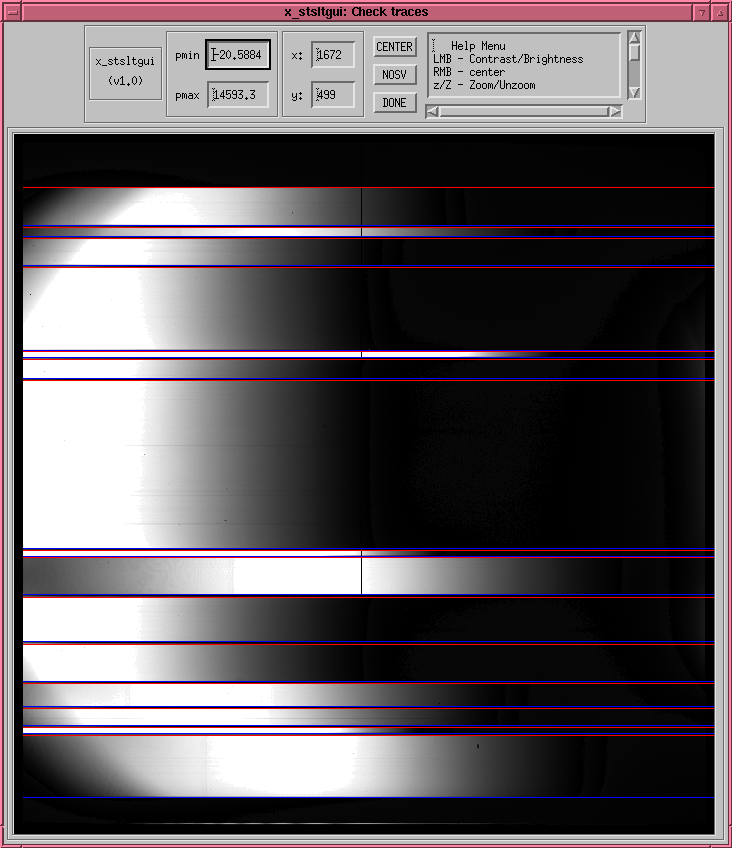

Screen shot of x_stsltgui

- The red lines trace the tops of each slits.
- The blue lines trace the bottoms.
- The left-mouse-button (LMB) adjusts brightness/contrast.
- The right-mouse-button (RMB) centers the image on the cursor.
- The z/Z keys zoom in/out.
- The t/b keys recenter the top/bottom edge of the slit to the
cursor position.
2004-06-10